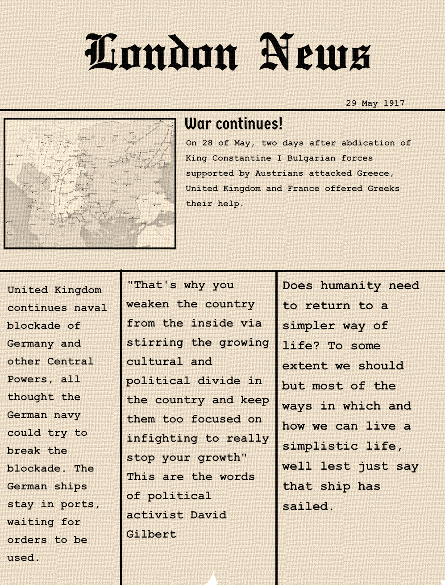

European Federation, is a story told in a different way. It's not a film, book or video game. It's a testimony of people who live in the world of the German victory..
Newest content:

Creators: Roadoslaw Garbowski, Dean Mosley, Cynical Chicken, Gunnar Foster, Dylan Moore, John Paul McGinnis